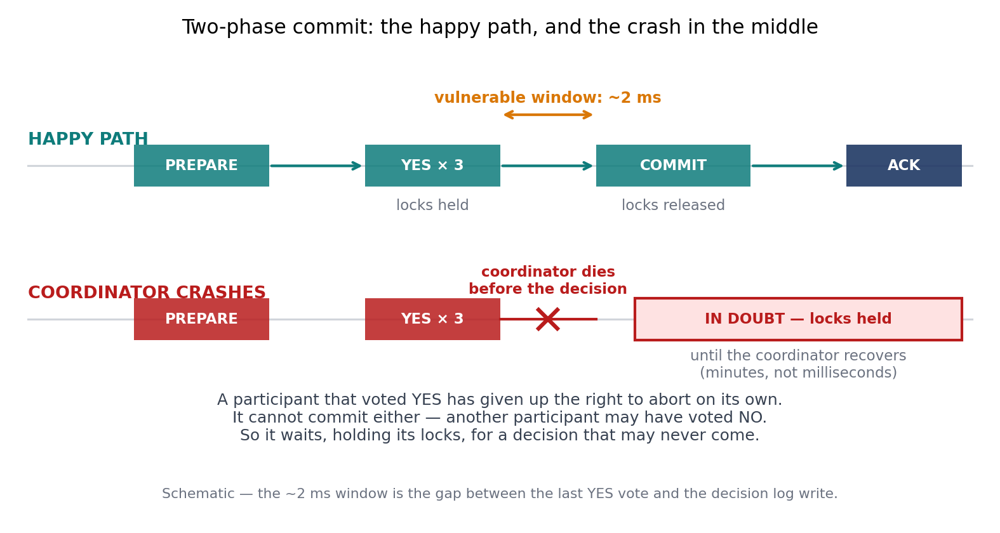
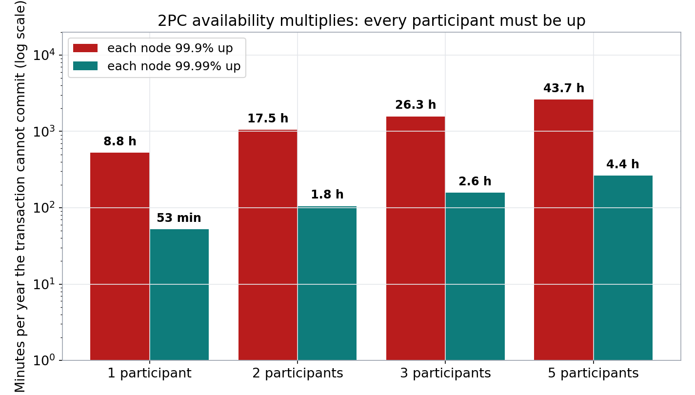
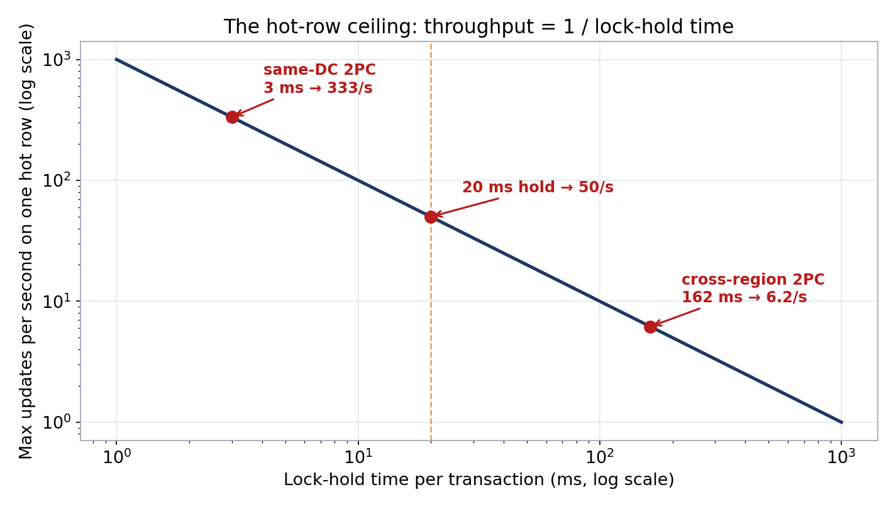
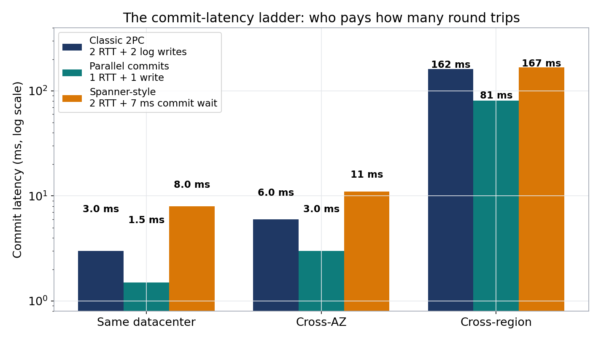

Part 2 gave the cluster one log that everyone agrees on. This part asks what happens when one write has to land in two places at once — and both places have to say yes, or neither does.
Move $100 from your checking account to your savings account. The debit lives on one shard, the credit on another. Commit the debit but not the credit and $100 vanishes. Commit the credit but not the debit and $100 appears from nowhere. A single-machine database solves this with a transaction: all or nothing, enforced by one log. Spread the data across machines and there is no single log anymore — so you need a protocol that makes several independent machines agree on one outcome. That protocol is two-phase commit (2PC), and it is the oldest answer in distributed systems — and the one every modern database still runs internally, in disguise.
The benchmark hook for this part is the availability arithmetic, and it runs in the opposite direction from Part 2. Consensus got more available as you added nodes. 2PC gets less: a transaction commits only if the coordinator and every participant are up. At 99.9% per-node uptime, one participant costs you 8.8 hours a year when it can't commit; three participants cost 26.3 hours; five cost 43.7 hours. Every participant you add is another machine that can veto your transaction by being down. And the blocking problem is worse than the downtime: at 10,000 transactions a second, a coordinator with a one-year MTBF strands about 20 transactions a year in doubt — each one holding its rows hostage until the coordinator recovers, in minutes, not milliseconds.
The ELI5 version
Two friends share a money jar, but each keeps their own notebook. You want to move $100 from Alice's notebook to Bob's. The rule is both notebooks change, or neither does — and the friends are in different rooms, shouting through a doorway, and either one might fall asleep mid-sentence.
So they appoint a referee. The referee walks to Alice: "Can you subtract $100?" Alice writes the subtraction in pencil, locks her notebook shut, and says "yes, I can." The referee walks to Bob: "Can you add $100?" Bob writes it in pencil, locks his notebook, and says "yes." Only now — with both yeses in hand — does the referee shout "COMMIT," and both friends erase the pencil and write it in ink. If either one said no, the referee shouts "ABORT," and both erase the pencil.
That is 2PC in one paragraph. The pencil is the prepare phase: each participant does everything needed to commit — writes the change durably to its own log, holds locks on the affected rows — without making it visible yet. The ink is the commit phase. And the rule that makes the whole thing work is the promise: once Alice says yes, she has given up the right to change her mind. She cannot abort on her own. She must wait for the referee's decision, however long that takes.
Now the failure that defines the protocol: the referee collects both yeses, then falls asleep before shouting the decision. Alice and Bob are stuck. Alice cannot commit — Bob might have said no, or the referee might have decided to abort and told Bob. Alice cannot abort either — the referee might have decided to commit and told Bob. So both sit there, notebooks locked, waiting for a referee who may never wake up. That is the blocking problem, and it is why 2PC is called a blocking protocol.
How it works: two phases, one commit point
The protocol, exactly:
Phase 1 — Prepare (voting). The coordinator assigns a globally unique transaction ID and sends PREPARE to every participant. Each participant checks it can commit — constraints hold, no conflicts, resources available — and if so, writes everything needed to commit later to durable storage, keeps holding its locks, and votes YES. A participant that cannot commit votes NO and aborts locally. The moment a participant votes YES, it has made an irrevocable promise: it cannot unilaterally abort, and it must hold its locks until the coordinator decides.
Phase 2 — Commit or abort (decision). If every vote is YES, the coordinator writes a COMMIT record to its own durable log — this write is the commit point, the single moment that determines the transaction's fate — and sends COMMIT to every participant, which makes the change visible and releases the locks. If any vote is NO, or a participant times out, the coordinator writes ABORT and tells everyone to roll back. After the commit point, the transaction will commit regardless of subsequent failures: the coordinator retries the decision indefinitely until every participant acknowledges.

The commit point is the most important concept in the protocol, and the reason 2PC is a protocol rather than a hope. Before it, the outcome can still be abort. After it, the outcome is commit, and the only remaining work is delivery — retrying the decision until every participant has heard it. The coordinator's log, not the participants' agreement, is the source of truth.
This is not a textbook curiosity. PostgreSQL exposes the participant side directly: PREPARE TRANSACTION writes a prepared transaction that survives disconnection and even a server restart, and COMMIT PREPARED / ROLLBACK PREPARED finish it — but the feature is disabled by default (max_prepared_transactions is 0, and raising it requires a server restart), which tells you how often people actually want it. XA — the standard API for 2PC across heterogeneous resources — does the same for MySQL, Oracle, and message queues. And inside distributed databases, 2PC never went away: it just got better participants.
The availability arithmetic: every participant is a veto
Part 2's quorum math rewarded adding nodes. 2PC punishes it. A transaction needs all of its participants up — not a majority, all of them — so the commit probability is the product of the uptimes, and the downtime is the complement:

The numbers are exact, not vibes: at 99.9% per node, 0.999³ = 99.70% all-up, which is 26.3 hours a year when the transaction cannot even start; 0.999⁵ = 99.50%, or 43.7 hours. Two participants at 99.9% cost 17.5 hours; one costs 8.8. At 99.99% per node the shape is identical at one-tenth the scale — 3 participants still cost 2.6 hours a year. This is why the first rule of distributed transactions is to keep related data together: a transaction that touches one shard doesn't need 2PC at all, and every shard you add is another machine that can say no by being down. It is also why 2PC is inherently CP-leaning, for the same structural reason as consensus — during a coordinator failure or a partition, the system doesn't gracefully degrade, it blocks.
And the blocking is not a rare edge case. The coordinator is vulnerable for only ~2 ms per transaction — the gap between the last YES vote and the decision log write — but at 10,000 transactions a second, that sliver adds up. With a coordinator MTBF of one year, expect about 20 transactions a year stranded in doubt; widen the window to 5 ms and it's 50; to 20 ms and it's 200. Our Monte Carlo over 10,000 simulated years lands at 19.96 a year, with a p99 year of 81. Each stranded transaction holds its rows locked for the full coordinator recovery — minutes, not milliseconds — and every other transaction touching those rows waits behind it. The probability is small. The blast radius is not.
The hot-row ceiling: throughput = 1 / lock-hold
The second cost is subtler and hits before any crash: locks are held across the whole network round trip. A 2PC transaction holds its locks from the first write until the decision lands, so the maximum update rate on a single hot row is exactly one over the lock-hold time — no matter how many machines you own:

Same-datacenter, a 2PC commit holds locks ~3 ms, so one hot row tops out at 333 updates a second. Cross-region, the same commit holds locks ~162 ms, and the ceiling collapses to 6.2 updates a second. A 20 ms hold gives 50 updates a second — the figure the textbooks quote, and the reason a 2PC transaction touching a popular row (a seat map, a balance, an inventory count) serializes your entire system through one row's lock. And queueing makes it worse than the ceiling suggests: at 90% of the ceiling, mean wait is 10× the hold itself (M/M/1: wait = h / (1 − ρ)), so a row running at 45 updates a second on a 20 ms hold doesn't feel like 20 ms of latency — it feels like 200 ms, for every writer, in a line that only grows.
The commit-latency ladder: who pays how many round trips
Classic 2PC pays two network round trips plus two forced log writes per commit — the participant's prepare vote, and the coordinator's decision. The modern systems didn't abolish that bill; they refinanced it:

- Spanner runs 2PC across Paxos groups. Each participant — and the coordinator itself — is a replicated consensus group, so no single machine failure blocks a transaction, and the commit decision lives in a replicated log instead of one coordinator's disk. The price is the cross-group round trips plus the commit wait: Spanner's TrueTime API returns a time interval, not a point (atomic clocks and GPS receivers in every datacenter keep the uncertainty ε ≤ 7 ms), and a transaction waits until TrueTime guarantees its commit timestamp is in the past on every clock. That wait buys external consistency — if T1 commits before T2 starts, T2 gets a later timestamp — and it costs ε on every read-write transaction.
- CockroachDB uses parallel commits: instead of writing intents, waiting, then writing a COMMITTED transaction record, the coordinator writes the record in a STAGING state — listing the in-flight writes — in parallel with the writes themselves. The transaction is committed as soon as every listed write and the staging record exist, so the client waits for one round of consensus instead of two. The record flips to COMMITTED in the background, and a reader that meets a STAGING record checks whether all listed writes succeeded and can decide the outcome itself. Cross-region, that halves commit latency from ~162 ms to ~81 ms.
- Percolator (Google's Bigtable indexer, and the model TiDB follows) lets the client drive 2PC through locks stored in the data itself. There is no separate coordinator to crash: the primary lock carries the transaction's fate, and any client that finds a stuck lock can resolve it by reading the primary. The blocking problem becomes a cleanup problem.
The pattern across all three: the fix for 2PC's weaknesses is never a better coordinator — it's making the coordinator unnecessary by storing the decision where consensus already lives. 3PC tried the other route — a third phase so participants can decide without the coordinator — but it relies on timing assumptions real networks violate, and it is rarely used in production.
2PC vs Saga: the honest trade
Across independent services, the alternative is the saga: a sequence of already-committed local transactions, each with a compensating action that undoes it. The saga never blocks — a failed step is undone and locks were already released — but it gives up atomicity and isolation in exchange. The failure accounting makes the trade concrete:
| Two-phase commit | Saga | |
|---|---|---|
| Guarantee | Atomic: all commit or all abort, no visible in-between | Eventually consistent: intermediate states are visible |
| Failure mode | Blocking: coordinator crash strands participants in doubt, locks held | Unresolved: a compensation that fails needs a human |
| How often it bites | ~20 in-doubt txns/yr at 10k txn/s (2 ms window, 1-yr MTBF) | 4.9% of 5-step sagas need a compensation (1% per-step failure); ~1 in 2,040 needs a human |
| Abort rate from ordinary downtime | 0.30% of txns abort when one of 3 participants is down at 99.9% | No aborts — steps commit as they go |
| Latency cost | 2 RTT + 2 log writes per commit (162 ms cross-region) | One local commit per step, no cross-service lock hold |
| When to use it | You control all the databases and need strict atomicity | Independent services, low volume per saga, compensations you can write |
The saga's 4.9% compensation rate is the number people underestimate: with five steps each failing 1% of the time, roughly one saga in twenty runs a compensation — and if compensations fail 1% of the time too, about one saga in 2,040 ends unresolved, sitting in a queue for a human. 2PC fails loudly and rarely (0.30% aborts from a participant simply being down); a saga fails quietly and often, and the cost is the compensation code you have to write, test, and maintain for every step — including the steps whose undo is "email the customer and apologize," which no protocol can automate.
The decision ladder, in practice: if the data can live in one database, keep it there. If it's one logical database spread over nodes, use a distributed SQL database and let it run the commit protocol. If it's two different systems run by one team at low volume, XA/2PC is fine. If it's independent services, use a saga — or the outbox pattern, which is a saga with the message publish folded into the local transaction — and accept eventual consistency. Each rung down buys independence and costs guarantees your code must then provide.
Why it breaks
The in-doubt transaction is the failure 2PC exists to create. A coordinator crash after the YES votes is not a rare disaster — at 10k txn/s it's ~20 times a year — and each one leaves rows locked until an operator or a recovery process determines the outcome. PostgreSQL makes this visible: a prepared transaction that nobody commits sits in pg_prepared_xacts holding its locks, and the only fixes are COMMIT PREPARED, ROLLBACK PREPARED, or a DBA deciding which. The operational rule is to monitor in-doubt transactions like you monitor disk space: alert on any prepared transaction older than a minute, because every minute it lives is a minute of blocked writers.
The slow participant is the version nobody designs for. 2PC waits for every participant, so the slowest one sets the lock-hold for all of them — and a participant that takes 30 seconds to fsync its prepare vote holds every other participant's locks for 30 seconds too. The signal is commit latency p99 climbing while the coordinator looks healthy, and the fix is the same boring one as Part 2: fast disks for the prepare log, and a timeout that aborts rather than waiting forever. A participant that cannot answer in time should vote NO, not hang.
The coordinator is a single point of failure wearing a protocol's clothes. Everything in 2PC funnels through one machine's log: its crash is the blocking event, its recovery is the unblock. The modern answer is not a better coordinator but no coordinator — Spanner replicates the decision across Paxos groups, CockroachDB stores it as data any node can read, Percolator lets any client resolve it. If your 2PC coordinator is a single unreplicated process, you don't have a distributed transaction system; you have a distributed system with one machine that can freeze all of it.
Takeaways
- 2PC is the atomic-commit protocol: prepare (vote YES, write durably, hold locks, give up the right to abort), then commit or abort at the coordinator's decision — the commit point is the single moment that fixes the outcome.
- Availability multiplies against you: at 99.9% per node, 3 participants cost 26.3 h/yr of commit-ability, 5 cost 43.7 h/yr. Every participant is a veto.
- The blocking problem is quantifiable: ~20 transactions a year stranded in doubt at 10k txn/s with a 2 ms vulnerable window and a 1-year coordinator MTBF — each holding its rows for the full recovery time.
- The hot-row ceiling is 1 / lock-hold: 333 updates/s same-datacenter, 6.2/s cross-region — and 90% of the ceiling costs 10× the hold in queueing.
- Commit costs 2 RTT + 2 log writes (162 ms cross-region); CockroachDB's parallel commits halve it to 81 ms; Spanner pays the same 2 RTTs plus a ≤7 ms TrueTime commit wait.
- Sagas never block but fail quietly: 4.9% of 5-step sagas need a compensation, ~1 in 2,040 needs a human. 2PC fails loudly (0.30% aborts) and rarely.
- Don't build 2PC across services. Use a distributed SQL database that already did — or a saga, if you can write the compensations.
Next in Season 2: Part 4 — Sagas & the outbox pattern: the transactions that never block, and what they cost instead. Follow on dev.to for the next part.